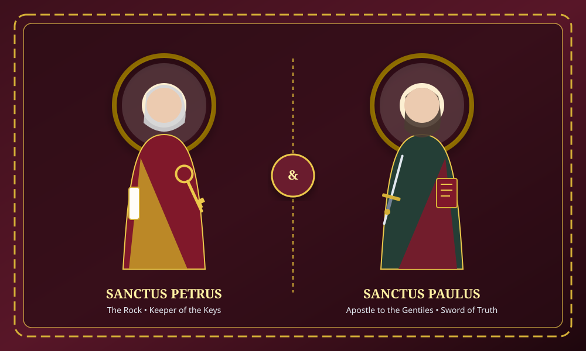

SS Peter & Paul Catholic Church Ugbolu, Delta State, Nigeria
Growing Together in Faith, Hope and Love.
"And I tell you, you are Peter, and on this rock I will build my church, and the gates of hell shall not prevail against it." — Matthew 16:18
Sunday Masses
6:30 AM (Dawn), 8:30 AM (High Mass), 10:30 AM (Youth)
Daily Morning Mass
Monday – Friday 6:00 AM; Saturday 6:30 AM
Adoration & Confessions
Thursdays 5:00 PM; Saturdays 5:00 PM
Welcome to Our Parish Family
Welcome to SS Peter and Paul Catholic Church, Ugbolu. We are a community of faith, united in Christ and committed to worship, fellowship, service and the teachings of the Catholic Church. Whether you are a parishioner or visiting for the first time, you are welcome to worship and grow with us.
Rooted in the apostolic traditions of Saints Peter and Paul, our parish thrives under the pastoral care of the Catholic Diocese of Issele-Uku, led by our Chief Shepherd, Most Rev. Dr. Michael Odogwu Elue. We welcome all families, youths, students, and visitors residing in Ugbolu and the wider Asaba capital territory to share in the richness of the Sacraments.

Patronal Feast Day
Solemnity of Saints Peter and Paul, Apostles — Celebrated on June 29th each year.
Parish Mass Schedules
Join us in the celebration of the Holy Sacrifice of the Mass and the Sacraments. All times listed are local Delta State (West Africa Time).
English and Igbo liturgical hymns.
Solemn ministration with St. Cecilia Choir.
Vibrant liturgical worship with CYON and HCA.
Sanctify the start of each working day.
Followed by novenas and society devotions.
Marian Mass and Rosary procession.
Reconciliation in the confessional until 6:00 PM.
Holy Hour and Benediction of the Blessed Sacrament.
Contact the parish office for homebound communion.
This Week's Parish Bulletin
Stay spiritually nourished and informed with our digital weekly bulletin containing the Sunday Lectionary readings, pastoral reflection, weekly intentions, and community notices.
"Leveling the Mountains of Pride and Filling the Valleys of Despair"
Pastoral Reflection by Rev. Fr. Emmanuel Okonkwo (Parish Priest)
"On this Second Sunday of Advent, the dramatic voice of St. John the Baptist echoes from the Judean wilderness: 'Prepare the way of the Lord, make straight his paths!' What are the spiritual mountains and valleys in our lives today? The mountains are our pride, our grudges, and our self-righteousness. Advent demands sincere spiritual bulldozing so that the King of Glory may find a smooth highway into our hearts..."
• 1st Reading: Baruch 5:1-9 | • Responsorial Psalm: Psalm 125 (126) | • 2nd Reading: Philippians 1:4-6, 8-11 | • Holy Gospel: Luke 3:1-6
Upcoming Celebrations
Key solemnities, holy days of obligation, and parish gatherings at SS Peter and Paul, Ugbolu.
Immaculate Conception of the B.V.M.
Principal Patroness of Nigeria. Holy Day of Obligation. Masses at 6:00 AM and 6:00 PM followed by Marian consecration.
Parish Advent Penitential Service
General confession with visiting confessors from the Asaba Deanery to prepare hearts for the Nativity of Christ.
Solemnity of the Nativity of the Lord
Christmas Eve Carol (8:30 PM) & Midnight Vigil (9:30 PM). Christmas Day Masses at 6:30 AM & 8:30 AM.
Latest Announcements
Updates, wedding banns, sacramental registrations, and society activities in Ugbolu.
Brother Emeka Osakwe & Sister Blessing Umeh
Third and final publication of the Banns of Marriage. The Holy Matrimony is scheduled for Saturday, 12th December 2026 at 10:00 AM at SS Peter and Paul Church, Ugbolu.
Read Full Details →St. Vincent de Paul Christmas Food Drive
Appeal for yams, rice, vegetable oil, and provisions to assist 75 indigent households and elderly community members in Ugbolu for the Christmas season.
Read Full Details →Issele-Uku Diocesan Youth Convention
Registration for the annual youth gathering holding at St. Paul's Cathedral, Issele-Uku. Parish CYON delegates should complete forms with the youth chaplain.
Read Full Details →Explore Our Parish Life
Discover the wealth of prayer, fellowship, and active service available in our Catholic faith tradition.
The Seven Sacraments
Guidelines, requirements, and class schedules for Baptism, Holy Communion, Confirmation, and Marriage.
Ministries & Societies
CMO, CWO, CYON, Altar Servers, St. Cecilia Choir, Legion of Mary, and other apostolates.
Catholic Prayer Book
Daily prayers, the Holy Rosary with scriptural mysteries, Divine Mercy Chaplet, and Stations of the Cross.
Parish Photo Gallery
View images of church celebrations, liturgical processions, altar servers, choir, and community gatherings.